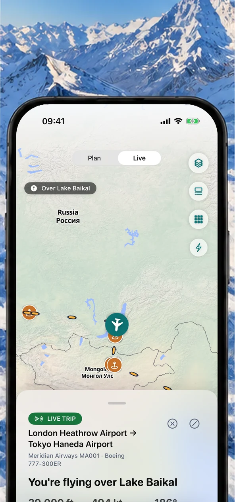
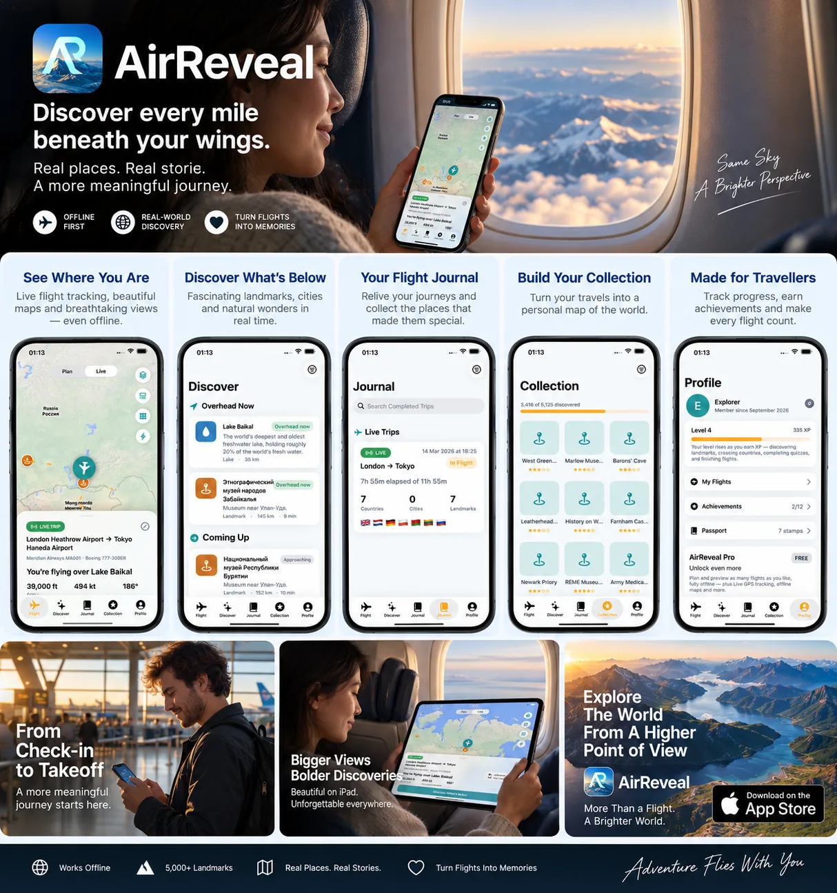
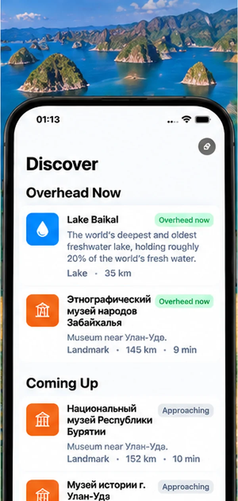
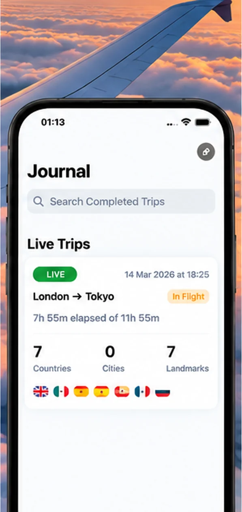
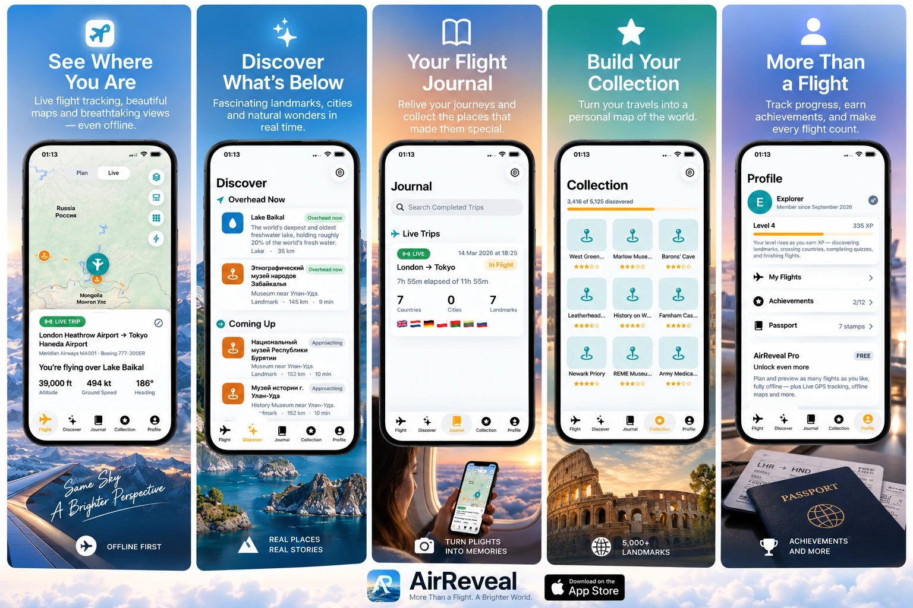
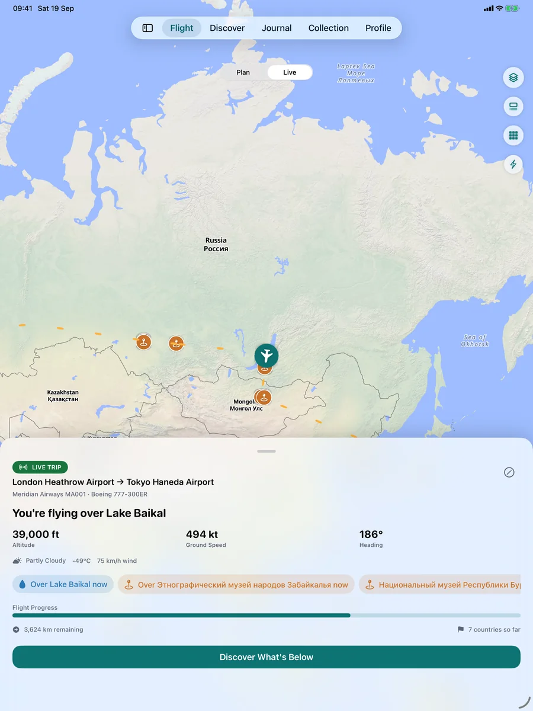
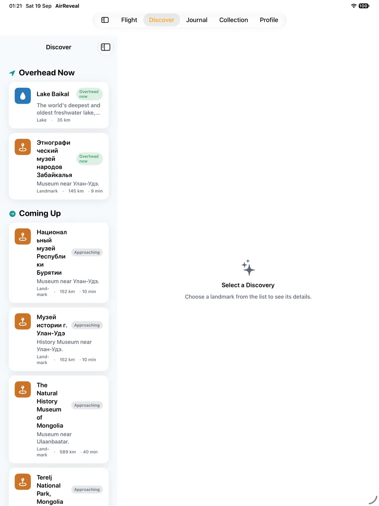
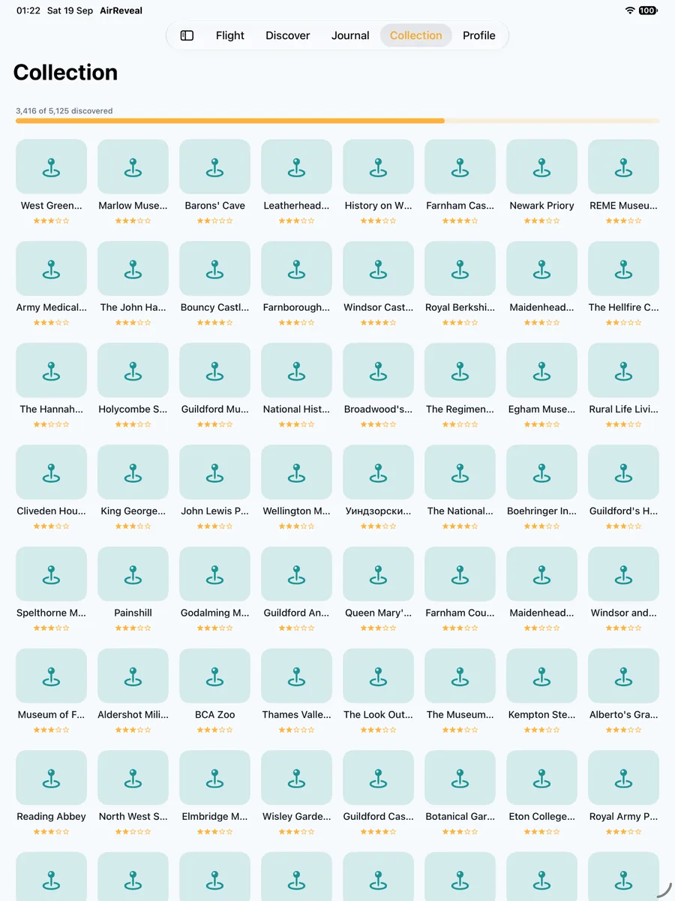

Vedi dove ti trovi
Tracciamento del volo in tempo reale, mappe bellissime e viste mozzafiato, anche offline.

Guarda cosa stai sorvolando, scopri i luoghi di interesse sotto il tuo aereo, ricorda ogni viaggio nel tuo diario di volo e costruisci una collezione personale del mondo, pensata per i momenti in cui sei davvero in volo.

AirReveal unisce contesto di volo, scoperta geografica, diario e collezione in un'unica esperienza serena pensata per chi viaggia.
Tracciamento del volo in tempo reale, mappe bellissime e viste mozzafiato, anche offline.

Luoghi affascinanti, città e meraviglie naturali in tempo reale.

Rivivi i tuoi viaggi e colleziona i luoghi che li hanno resi speciali.

Trasforma i tuoi viaggi in una mappa personale del mondo.

Ottieni traguardi, segui i tuoi progressi, conserva il tuo passaporto e fai contare ogni volo.

Un'esperienza adattiva progettata attorno al dispositivo che hai in mano, da una rapida occhiata su iPhone a una grande mappa di volo su iPad.




Ogni posto al finestrino pone la stessa domanda. AirReveal risponde: la tua posizione in tempo reale sulla mappa, i luoghi, le città e le meraviglie naturali sotto e davanti al tuo aereo e cosa arriva dopo.
Luoghi reali lungo la tua rotta, nominati mentre li sorvoli, con il GPS del tuo dispositivo.
Scopri se un luogo, o il sole dell'ora d'oro, è a sinistra o a destra, così scegli il finestrino giusto.
Una mappa di volo offline che richiede solo il GPS. Scarica i contenuti del volo prima della partenza e sei pronto.
Salva ogni volo, colleziona i luoghi che hai visto e timbra il tuo passaporto dei paesi.
Apri AirReveal: usa il GPS del tuo dispositivo per collocarti sulla mappa e nominare i luoghi, le città, le coste e le meraviglie naturali sotto e davanti al tuo aereo, in tempo reale.
Sì. Il tracciamento in tempo reale usa il GPS del tuo dispositivo, che non richiede il Wi-Fi di bordo né il segnale mobile. Scarica i contenuti offline di un volo prima della partenza, così mappe e luoghi sono pronti per il viaggio.
AirReveal ti dice se un luogo, o il sole all'ora d'oro, è a sinistra o a destra del tuo aeromobile, così sai da quale finestrino guardare.
No. AirReveal è un compagno personale per il viaggio stesso. Non è un servizio ufficiale di stato dei voli, traffico aereo o sicurezza aerea: rivolgiti alla tua compagnia e all'aeroporto per gate, ritardi e indicazioni dell'equipaggio.
Sì. Salva ogni volo nel tuo diario, colleziona i luoghi che scopri, timbra il tuo passaporto dei paesi e segui i tuoi progressi con i traguardi.
Puoi pianificare e visualizzare in anteprima i voli e seguire in diretta il tuo primo volo gratuitamente. AirReveal Pro sblocca il tracciamento GPS in tempo reale continuo e l'intera esperienza in volo.
Pianifica e visualizza in anteprima i voli ed esplora l'esperienza prima del decollo.
Sblocca il tracciamento GPS in tempo reale continuo e l'intera esperienza in volo.
I prezzi sono mostrati nella tua valuta sull'App Store.
AirReveal arriverà presto sull'App Store per iPhone e iPad.